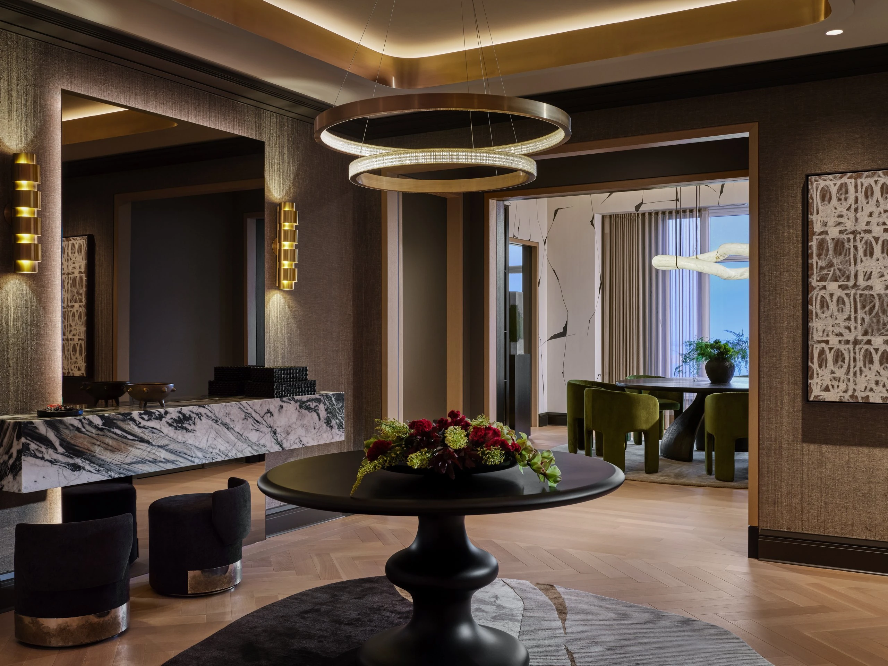
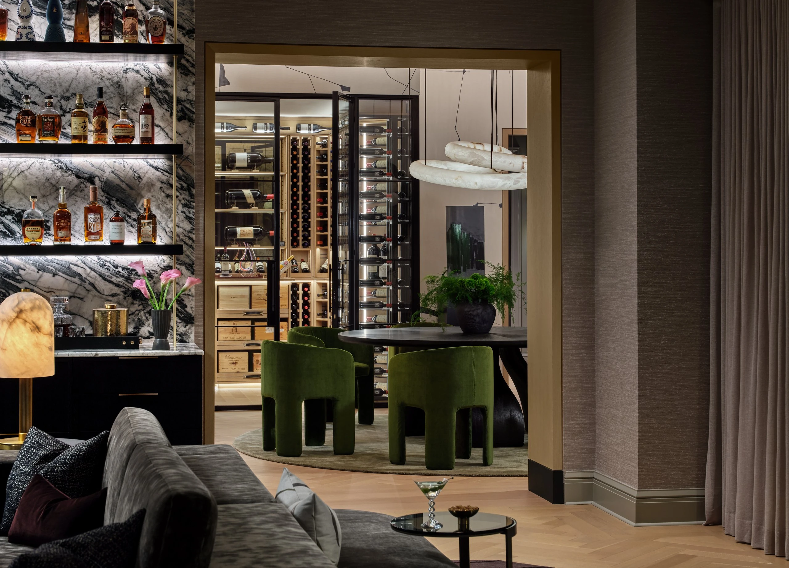
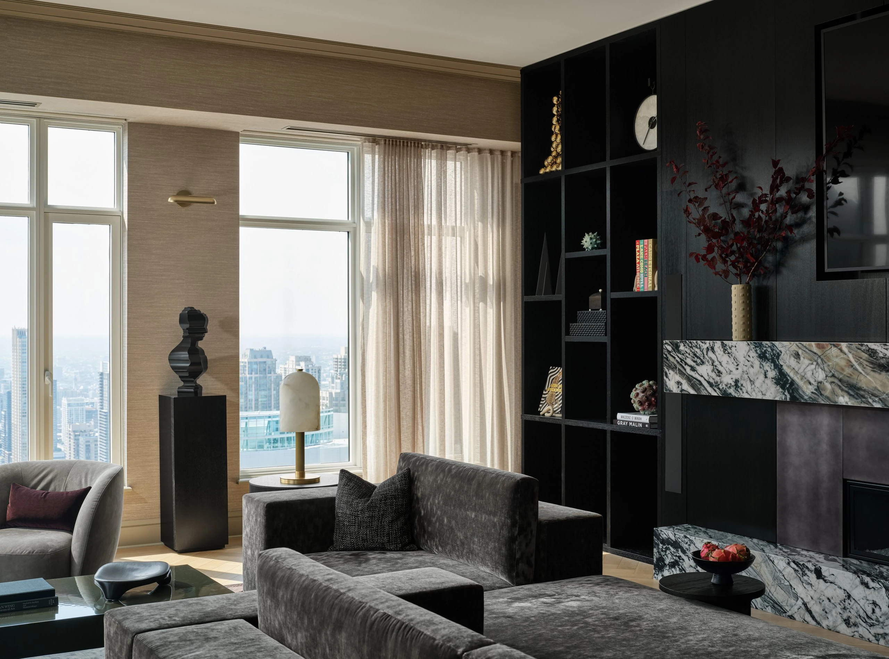

Portrait
Michael MillerFounderPrincipal
Michael Miller
Leads CI from the first conversation to the final walkthrough, and holds design and construction to one standard.



CI was built around one belief: an extraordinary home begins with an extraordinary understanding of the person living in it: their lifestyle, their wellness, their vision for how they want to live
We bring architecture, interior design, construction, furnishings, art, wellness, project management, and move-in together to create one integrated residential experience
CI was built on what our
clients needed most and had never
been given
One team that communicates. One firm
that takes responsibility. One integrated process
that moves with intelligence from the
first conversation to the finished home
We structured CI around the values
we heard most clearly
Your time is your
most valuable
asset
Our CI process
is built
to protect it
That principle has shaped CI from the beginning. It shapes every project today
A significant residence involves countless
moving parts: architecture,
engineering, design, trades, approvals,
materials, schedules, budgets,
procurement, and installation, all interconnected,
all requiring expert coordination
CI exists to make
that feel effortless
One central team guides
the entire journey, communicating what matters,
anticipating what comes next,
and managing every detail with the precision
and care your home deserves
You bring the vision. You make the decisions
that shape it. We handle
everything required to bring it to life
Creating your home
should be one of the most rewarding
experiences of your life
CI is built
to make sure it is
Complete
Responsibility
Every element of your home
is in conversation with the next
done by one team
Lighting shapes how materials
are experienced
Millwork informs
furniture scale
Technology is woven
into architecture
Wellness is considered
in planning
Art responds
to proportion
Procurement drives
the schedule
At CI, the team responsible
for designing these relationships
is the same team responsible
for executing them
That
connectivity
is what
elevates
the outcome
Every decision is made with the whole in view, informed by what came before it and intentional about what comes next. The result is a home where every detail belongs, because every detail was considered as part of one coordinated vision
At CI, luxury is precision:
every detail considered,
every element in harmony
Quality is what closes precisely.
What feels effortless.
What you notice the moment you walk in,
and what you never have to think about
because it simply works
It is the relationship
between concept to completion.
Between the drawing
and the finished detail.
Between what we promise
and what we deliver
Design, construction, service,
and communication:
we hold each to the same
concierge-level standard,
because each one shapes
how you live in your home
Our clients define our work. We study
how you live + want to live before we decide
how your home should look
The most meaningful homes
are an expression of the person living in them
designed around a specific life,
a specific way of being, a specific vision
for what home should feel like
Yours
Every CI project is shaped
by an in-house team of specialists, all working
toward one outcome: your home
Our strength is connection. Every discipline
works side by side under one roof, so design intent,
technical requirements, construction,
selections, and finishing move forward as one
That is the CI turnkey experience:
one team, fully aligned, from the first sketch
to taking you through to move in
Leads CI from the first conversation to the final walkthrough, and holds design and construction to one standard.

Carries a residence from the concept through the documentation, keeping plan, materials and light in one language.

Works the interiors and their details, from millwork and stone to the furnishings that finish the rooms.

Develops drawings, schedules and selections, and keeps the design file in step with the build.

Runs the project day to day: budget, schedule, trades, and the decisions each stage needs.

Keeps submittals, deliveries and the site moving, so the schedule holds.

Coordinates trades and inspections on site, and tracks what each room needs next.

Builds and supervises in the field, where the drawings meet the house.

Keeps the numbers of every project clear: budgets, invoices, and what has been committed.
We take the work seriously,
and we make the experience enjoyable
Our role is to make a complex undertaking
feel clear, collaborative,
and effortless for you. That means
Communicating
openly
Explaining
every decision
Respecting
your time
Owning
the outcome
Bringing solutions
to every challenge
This is CI
concierge-level service
We save our clients an average of 20%
of their project time
Your life is the starting point
Design and construction,
aligned from day one
Bespoke means the home could only belong
to the person it was created for
Beauty matters. So do comfort,
wellness, functionality,
longevity, and performance
The smallest decisions often determine
how exceptional the whole feels
Context, transparency,
and confidence at every step
Turnkey means we own the outcome. Completely
Your home holds the next
version of your life.
Let’s design it with intention